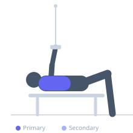
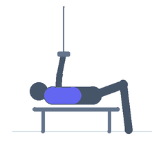

Exercise guide / Cable Pullover
Cable Pullover
The cable pullover is a lat isolation exercise performed with a high-pulley cable attachment. The lifter stands or kneels and pulls the cable down and back in a sweeping arc, keeping the arms straight throughout. Because tension from the cable remains constant across the full range of motion, this movement provides superior lat stretch at the top compared to dumbbell variations.
Primary muscles
latissimus dorsi
Secondary muscles
pectoralis major sternal
teres major
Stabilizers
transverse abdominis
erector spinae
Equipment
Cable Machine (High Pulley)
Optional
Cable Machine (Dual Pulley / Functional Trainer)


Starting position
- Stand facing a high-pulley cable machine. Attach a straight bar or rope. Grip the attachment with both hands using a pronated grip and step back so the cable pulls your arms overhead. Hinge slightly at the hips with a soft bend in the knees.
Setup
- Set the cable pulley to its highest position. Attach a straight bar or tricep rope. Select an appropriate weight and step far enough from the machine to feel stretch in the lats with arms raised overhead.
Steps
- Step 1: Begin with arms extended overhead and elbows slightly soft, feeling a full stretch in the lats.
- Step 2: Keeping the arms straight, initiate the movement by depressing the scapulae and driving the elbows toward the hips.
- Step 3: Pull the cable down in a wide arc until the hands are roughly at hip level and the lats are fully contracted.
- Step 4: Pause briefly at the bottom, squeezing the lats.
- Step 5: Slowly return to the starting position under control, allowing the lats to fully lengthen at the top.
Coaching cues
- Think 'elbows to hips' rather than 'hands down'
- Imagine you are trying to bend the bar over your thighs
- Keep your ribcage down — do not flare at the top
Breathing
- Exhale as you pull the cable downward and the lats contract. Inhale as you return to the starting position.
Range of motion
- Arms should travel from fully overhead to hip level, achieving a full lat stretch at the top and full contraction at the bottom.
Tempo
- 2-0-2-1 (2s pull down, no pause, 2s return, 1s stretch at top)
Common mistakes
- Bending the elbows and turning it into a pulldown — keep arms straight throughout
- Using momentum or body sway to initiate the movement
- Not allowing a full stretch at the top position
Safety
- Avoid hyperextending the lumbar spine by maintaining a neutral spine and slight hip hinge
- Use a weight that allows full range of motion without compensatory movement
Training
- hypertrophy: 10–15 reps
- endurance: 15–20 reps
- hypertrophy: 3–4 sets
- endurance: 2–3 sets
- Rest: {'hypertrophy': 60, 'endurance': 45}